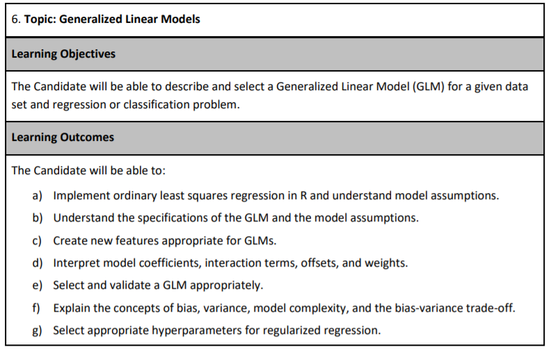
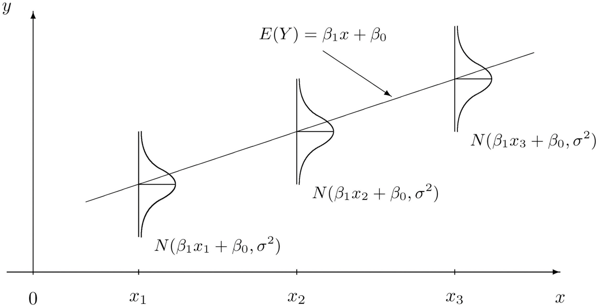
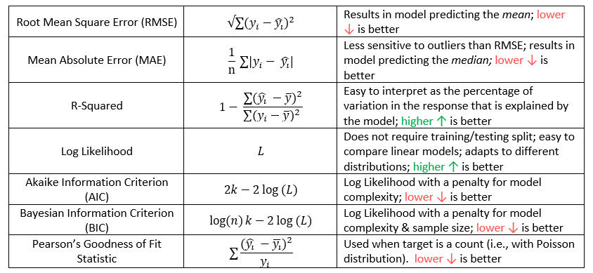
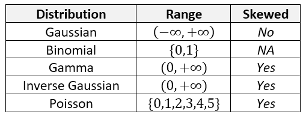
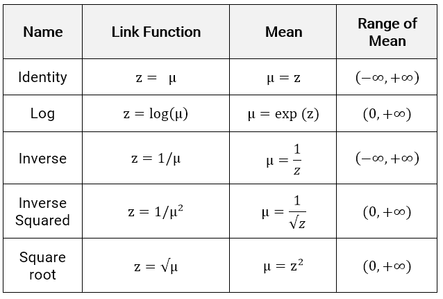

5 Introduction to modeling
About 40-50% of the exam grade is based on modeling. The goal is to be able to predict an unknown quantity. In actuarial applications, this tends to claim that occur in the future, death, injury, accidents, policy lapse, hurricanes, or some other insurable event. For model walkthroughs and updates, visit PredictiveInsightsAI.com.
5.1 Motivating example: Stock Analytics Dashboard
This Shiny app demonstrates how models support anomaly detection and dividend analysis in real-world stock analytics.
Open in a new tab: https://019b3e00-a6ca-37b0-0ab4-a5b8356251b4.share.connect.posit.cloud/
The next few chapters will cover the following learning objectives.

5.2 Modeling vocabulary
Modeling notation is sloppy because many words mean the same thing.
The number of observations will be denoted by \(n\). When we refer to the size of a data set, we are referring to \(n\). Each row of the data is called an observation or record. Observations tend to be people, cars, buildings, or other insurable things. These are always independent in that they do not influence one another. Because the exam center computers have limited power, \(n\) tends to be less than 100,000.
Each observation has known attributes called variables, features, or predictors. We use \(p\) to refer the number of input variables that are used in the model.
The target, response, label, dependent variable, or outcome variable is the unknown quantity that is being predicted. We use \(Y\) for this. This can be either a whole number, in which case we are performing regression, or a category, in which case we perform classification.
For example, say that you are a health insurance company that wants to set the premiums for a group of people. The premiums for people who are likely to incur high health costs need to be higher than those likely to be low-cost.
Older people tend to use more of their health benefits than younger people, but there are always exceptions for those who are very physically active and healthy. Those who have an unhealthy Body Mass Index (BMI) tend to have higher costs than those who have a healthy BMI, but this has less impact on younger people.
In short, we want to predict the future health costs of a person by taking into account many of their attributes at once.
This can be done in the health_insurance data by fitting a model to predict the annual health costs of a person. The target variable is y = charges, and the predictor variables are age, sex, bmi, children, smoker and region. These six variables mean that \(p = 6\). The data is collected from 1,338 patients, which means that \(n = 1,338\).
5.3 Modeling notation
Scalar numbers are denoted by ordinary variables (i.e., \(x = 2\), \(z = 4\)), and vectors are denoted by bold-faced letters
\[\mathbf{a} = \begin{pmatrix} a_1 \\ a_2 \\ a_3 \end{pmatrix}\]
We organize these variables into matrices. Take an example with \(p\) = 2 columns and 3 observations. The matrix is said to be \(3 \times 2\) (read as “3-by-2”) matrix.
\[ \mathbf{X} = \begin{pmatrix}x_{11} & x_{21}\\ x_{21} & x_{22}\\ x_{31} & x_{32} \end{pmatrix} \]
In the health care costs example, \(y_1\) would be the costs of the first patient, \(y_2\) the costs of the second patient, and so forth. The variables \(x_{11}\) and \(x_{12}\) might represent the first patient’s age and sex respectively, where \(x_{i1}\) is the patient’s age, and \(x_{i2} = 1\) if the ith patient is male and 0 if female.
Modeling is about using \(X\) to predict \(Y\). We call this “y-hat”, or simply the prediction. This is based on a function of the data \(X\).
\[\hat{Y} = f(X)\]
This is almost never going to happen perfectly, and so there is always an error term, \(\epsilon\). This can be made smaller, but is never exactly zero.
\[ \hat{Y} + \epsilon = f(X) + \epsilon \]
In other words, \(\epsilon = y - \hat{y}\). We call this the residual. When we predict the health care costs of a person, this is the difference between the predicted costs (which we had created the year before) and the actual costs that the patient experienced (of that current year).
Another way of saying this is in terms of expected value: the model \(f(X)\) estimates the expected value of the target \(E[Y|X]\). That is, once we condition on the data \(X\), we can make a guess as to what we expect \(Y\) to be “close to”. We will see that there are many ways of measuring “closeness.”
5.4 Ordinary Least Squares (OLS)
Also known as simple linear regression, OLS predicts the target as a weighted sum of the variables.
We find a \(\mathbf{\beta}\) so that
\[ \hat{Y} = E[Y] = \beta_0 + \beta_1 X_1 + \beta_2 X_2 + ... + \beta_p X_p \]
Each \(y_i\) is a linear combination of \(x_{i1}, ..., x_{ip}\), plus a constant \(\beta_0\) which is called the intercept term.
In the one-dimensional case, this creates a line connecting the observations. In higher dimensions, this creates a hyper-plane.

The red line shows the expected value of the target, as the target \(\hat{Y}\) is actually a random variable. For each observation, the model assumes a Gaussian distribution. If there is just a single predictor, \(x\), then the mean is \(\beta_0 + \beta_1 x\).

The question then is how can we choose the best values of \(\beta?\) First of all, we need to define what we mean by “best”. Ideally, we will choose these values which will create close predictions of \(Y\) on new, unseen data.
To solve for \(\mathbf{\beta}\), we first need to define a loss function. This would let us compare how well a model fits the data. The most commonly used loss function is the residual sum of squares (RSS), also called the squared error loss or the L2 norm. When RSS is small, then the predictions are close to the actual values, and the model is a good fit. When RSS is large, the model is a poor fit.
\[\text{RSS} = \sum_i(y_i - \hat{y})^2\]
When you replace \(\hat{y_i}\) in the above equation with \(\beta_0 + \beta_1 x_1 + ... + \beta_p x_p\), take the derivative with respect to \(\beta\), set equal to zero, and solve, we can find the optimal values. This turns the problem of statistics into a problem of numeric optimization, which computers can do quickly.
You will also see the term Root Mean Squared Error (RMSE) which is just the average of the square root of the \(\text{RSS}\), or just Mean Squared Error (MSE).
You might be wondering: why does this need to be the squared error? Why not the absolute error or the cubed error? Technically, these could be used, but the betas would not be the maximum likelihood parameters. Using the absolute error results in the model predicting the median as opposed to the mean. Two reasons behind the popularity of RSS are:
- It provides the same solution if we assume that the distribution of \(Y|X\) is Gaussian and maximize the likelihood function. This method is used for GLMs, in the next chapter.
- It is computationally easier, and computers used to have a difficult time optimizing for MAE.
What does it mean when a log transform is applied to \(Y\)? I remember from my statistics course on regression that this was done.
This is done so that the variance is closer to being constant. For example, if the units are in dollars, it is very common for the values to fluctuate more for higher values than for lower values. Other types of transformations can correct for skewness.
Consider a stock price, for instance. If the stock is $50 per share, it will go up or down less than $1000 per share. However, the log of 50 is about 3.9, and the log of 1000 is only 6.9, so this difference is smaller. In other words, the variance is smaller.
Transforming the target means that instead of the model predicting \(E[Y]\), it predicts \(E[log(Y)]\). A common mistake is to then the take the exponent in an attempt to “undo” this transform, but \(e^{E[log(Y)]}\) is not the same as \(E[Y]\).
5.5 R^2 Statistic
One of the most common ways of measuring model fit is the “R-Squared” statistic. The RSS provides an absolute measure of fit because it can be any positive value, but it is not always clear what a “good” RSS is because it is measured in units of \(Y\).
The \(R^2\) statistic provides an alternative measure of fit. It takes the proportion of variance explained - so that it is always a value between 0 and 1 and is independent of the scale of \(Y\).
\[R^2 = \frac{\text{TSS} - \text{RSS}}{\text{TSS}} = 1 - \frac{\text{RSS}}{\text{TSS}}\]
Where \(\text{TSS} = \sum(y_i - \hat{y})^2\) is the total sum of squares. TSS measures the total variance in the response YY and can be considered the amount of variability inherent in the response before the regression is performed. In contrast, RSS measures the amount of variability that is left unexplained after performing the regression.
Hench, \(\text{TSS} - \text{RSS}\) measures the amount of variability in the response that is explained (or removed) by performing the regression, and R^2 measures the proportion of variability in \(Y\) that can be explained using \(X\).
A value near 1 indicates that the regression has explained a large proportion of the variability in the response, whereas, a number near 0 indicates that the regression did not explain much of the variability in the response. This might occur because the linear model is wrong.
The \(R^2\) sstatistic has an interpretational advantage over the RSE. In actuarial applications, it is useful to use an absolute measure of model fit, such as RSS, to train the model, and then use \(R^2\) when explaining it to your clients so that it is easier to communicate.
This chapter was based on Chapter 3, Linear Regression, of An Introduction to Statistical Learning.
5.6 Correlation
Correlation does not imply causation.
This is a common saying. Just because two things are correlated does not necessarily mean that one causes the other. Just because most actuaries work remotely when there is cold and snowing does not mean that cold and snow cause less social work habits. A more likely explanation is that actuaries are concerned about driving safely on icy roads and avoiding being involved in a car accident.
5.6.1 Pearson’s correlation
Pearson correlation: Measures a linear dependence between two variables \(X\) and \(Y\). This is the most commonly used correlation method.
The correlation is defined by \(r\),
\[r = Cor(X,Y) = \frac{\sum(x_i - \bar{x})(y_i - \bar{y})}{\sqrt{\sum(x_i - \bar{x})^2}\sqrt{(y_i - \bar{y})^2}}\]
and this is also a measure of the linear relationship between two vectors, \(X\) and \(Y\). This suggests that we might be able to use \(r = Cor(X,Y)\) instead of \(R^2\) to assess the model fit. In the case of simple linear regression, where there is only one predictor variable, it is tree that \(R^2 = r^2\); however, this relationship does not extend automatically when there are more than one predictor variable. This is because \(X\) becomes a matrix instead of a single vector.
5.6.2 Spearman (rank) correlation
Spearman correlation: Computes the correlation between the rank of x and the rank of y variables.
\[rho = \frac{\sum(x' - m_{x'})(y'_i - m_{y'})}{\sqrt{\sum(x' - m_{x'})^2 \sum(y' - m_{y'})^2}}\] Where \(x′=rank(x)\) and \(y′=rank(y)\)
Most questions on Exam PA will ask you about Pearson’s correlation. One advantage to Spearman over Pearson is that Spearman works for ordinal variables. See Chapter 6 for the difference between ordinal and numeric variables.
5.7 Regression vs. classification
Regression modeling is when a target is a number. Binary classification is when there are two outcomes, such as “Yes/No,” “True/False,” or “0/1”. Multi-class regression is when there are more than two categories such as “Red, Yellow, Green” or “A, B, C, D, E.” There are many other types of regression that are not covered on this exam, such as ordinal regression, where the outcome is an ordered category, or time-series regression, where the data is time-dependent.
5.8 Regression metrics
For any model, the goal is always to reduce an error metric. This is a way of measuring how well the model can explain the target.
The phrases “reducing error,” “improving performance,” or “making a better fit” are synonymous with reducing the error. The word “better” means “lower error,” and “worse” means “higher error.”
The choice of error metric has a big difference in the outcome. When explaining a model to a businessperson, using simpler metrics such as R-Squared and Accuracy is convenient. When training the model, however, using a more nuanced metric is almost always better.
These are the regression metrics that are most likely to appear on Exam PA. Memorizing these formulas for AIC and BIC is unnecessary as they are in the R documentation by typing
?AIC or ?BIC into the R console.

In our health insurance data, we can predict the health costs of a person based on their age, body mass index and gender. Intuitively, we expect that these costs would increase with the increase in the age of the person, be different for men than for women, and be higher for those who have a less healthy BMI. We create a linear model using bmi, age, and sex as an inputs.
The formula controls which variables are included. There are a few shortcuts for using R formulas.
| Formula | Meaning |
|---|---|
charges ~ bmi + age |
Use age and bmi to predict charges |
charges ~ bmi + age + bmi*age |
Use age,bmi as well as an interaction to predict charges |
charges ~ (bmi > 20) + age |
Use an indicator variable for bmi > 20 age to predict charges |
log(charges) ~ log(bmi) + log(age) |
Use the logs of age and bmi to predict log(charges) |
charges ~ . |
Use all variables to predict charges |
While you can use formulas to create new variables, the exam questions tend to have you do this in the data itself. For example, if taking the log transform of a bmi, you would add a column log_bmi to the data and remove the original bmi column.
The summary function gives details about the model. First, the Estimate, gives you the coefficients. The Std. Error is the error of the estimate for the coefficient. Higher standard error means greater uncertainty. This is relative to the average value of that variable. The p value tells you how “big” this error really is based on standard deviations. A small p-value (Pr (>|t|))) means that we can safely reject the null hypothesis that says the coefficient is equal to zero.
The little *, **, *** tell you the significance level. A variable with a *** means that the probability of getting a coefficient of that size given that the data was randomly generated is less than 0.001. The ** has a significance level of 0.01, and * of 0.05.
5.11 Multiple Linear Regression
5.11.1 Assumptions of OLS
We assume that the target is Gaussian with a mean equal to the linear predictor. This can be broken down into two parts:
A random component: The target variable \(Y|X\) is normally distributed with mean \(\mu = \mu(X) = E(Y|X)\)
A link between the target and the covariates (also known as the systemic component) \(\mu(X) = X\beta\)
This says that each observation follows a normal distribution that has a mean that is equal to the linear predictor. Another way of saying this is that “after we adjust for the data, the error is normally distributed and the variance is constant.” If \(I\) is an n-by-in identity matrix, and \(\sigma^2 I\) is the covariance matrix, then
\[ \mathbf{Y|X} \sim N( \mathbf{X \beta}, \mathbf{\sigma^2} I) \]
Once you have chosen your model, you should re-train over the entire data set. This is to make the coefficients more stable because n is larger. Below you can see that the standard error is lower after training over the entire data set.
5.11.2 Assumptions of GLMs
GLMs are more general which eludes that they are more flexible. We relax these two assumptions by saying that the model is defined by
A random component: \(Y|X \sim \text{some exponential family distribution}\)
A link: between the random component and covariates:
\[g(\mu(X)) = X\beta\] where \(g\) is called the link function and \(\mu = E[Y|X]\).
Each observation follows some type of exponential distribution (Gamma, Inverse Gaussian, Poisson, Binomial, etc.), and that distribution has a mean which is related to the linear predictor through the link function. Additionally, there is a dispersion parameter, but that is more info is needed here.
Notice that the top three distributions are continuous but the bottom two are discrete.

There are five link functions for a continuous \(Y\), , although the choice of distribution family will typically rule out several of these immediately. The linear predictor (a.k.a., the systemic component) is \(z\) and the link function is how this connects to the expected value of the response.
\[z = X\beta = g(\mu)\]

If the target distribution must have a positive mean, such as in the Inverse Gaussian or Gamma, then the Identity or Inverse links are poor choices because they allow for negative values; the mean range is \((-\infty, \infty)\). The other link functions force the mean to be positive.
5.12 Interpretation of coefficients
The GLM’s interpretation depends on the choice of link function.
5.12.1 Identity link
This is the easiest to interpret. For each one-unit increase in \(X_j\), the expected value of the target, \(E[Y]\), increases by \(\beta_j\), assuming that all other variables are held constant.
5.12.2 Log link
This is the most popular choice when the results need to be easy to understand. Simply take the exponent of the coefficients and the model turns into a product of numbers being multiplied together.
\[ log(\hat{Y}) = X\beta \Rightarrow \hat{Y} = e^{X \beta} \]
For a single observation \(Y_i\), this is
\[ \text{exp}(\beta_0 + \beta_1 X_{i1} + \beta_2 X_{i2} + ... + \beta_p X_{ip}) = \\ e^{\beta_0} e^{\beta_1 X_{i1}}e^{\beta_2 X_{i2}} ... e^{\beta_p X_{ip}} = R_{i0} R_{i2} R_{i3} ... R_{ip} \]
\(R_{ik}\) is known as the relativity is known as the relativity of the kth variable. This terminology is from insurance ratemaking, where actuaries need to explain the impact of each variable to insurance regulators.
Another advantage to the log link is that the coefficients can be interpreted as having a percentage change on the target. Here is an example for a GLM with variables \(X_1\) and \(X_2\) and a log link function. This holds any continuous target distribution.
| Variable | \(\beta_j\) | \(e^{\beta_j} - 1\) | Interpretation |
|---|---|---|---|
| (intercept) | 0.100 | 0.105 | |
| \(X_1\) | 0.400 | 0.492 | 49% increase in \(E[Y]\) for each unit increase in \(X_1\)* |
| \(X_2\) | -0.500 | -0.393 | 39% decrease in \(E[Y]\) for each unit increase in \(X_2\)* |
If categorical predictors are used, then the interpretation is very similar. Say that there is one predictor, COLOR, which takes on values of YELLOW (reference level), RED, and BLUE.
| Variable | \(\beta_j\) | \(e^{\beta_j} - 1\) | Interpretation |
|---|---|---|---|
| (intercept) | 0.100 | 0.105 | |
| Color=RED | 0.400 | 0.492 | 49% increase in \(E[Y]\) for RED cars as opposed to YELLOW cars* |
| Color=BLUE | -0.500 | -0.393 | 39% decrease in \(E[Y]\) for BLUE cars rather than YELLOW cars* |
* Assuming all other variables are held constant.
Warning: Never take the log of Y with a GLM! This is a common mistake because we handled skewness for multiple linear regression models, but that was before we had the GLM in our toolbox. Do not move on until you understand the difference between these two models:
glm(y ~ x, family = gaussian(link = “log”), data = data)
glm(log(y) ~ x, family = gaussian(link = “identity”), data = data)
The first says that the target has a Gaussian distribution which has a mean equal to the log of the linear predictor. The second says that the target’s log has a Guassian distribution that is exactly equal to the linear predictor. You will remember from Exam P that when you apply a transform to a random variable, the distribution changes completely. Try running the above examples on real data and see if you can spot the differences in the results.
5.13 Advantages and disadvantages
There is usually at least one question on the PA exam which asks you to “list some of the advantages and disadvantages of using this particular model,” and so here is one such list. It is unlikely that the grader will take off points for including too many comments and so a good strategy is to include everything that comes to mind.
GLM Advantages
- Easy to interpret
- Can easily be deployed in spreadsheet format
- Handles different response/target distributions
- Is commonly used in insurance ratemaking
GLM Disadvantages
- Does not select features (without stepwise selection)
- Strict assumptions around distribution shape and randomness of error terms
- Predictor variables need to be uncorrelated
- Unable to detect non-linearity directly (although this can manually be addressed through feature engineering)
- Sensitive to outliers
- Low predictive power
5.14 GLMs for regression
For regression problems, we try to match the actual distribution to the distribution of the model being used in the GLM. These are the most likely distributions.
The choice of target distribution should be similar to the actual distribution of \(Y\). For instance, if \(Y\) is never less than zero, then using the Gaussian distribution is not ideal because this can allow for negative values. If the distribution is right-skewed, then the Gamma or Inverse Gaussian may be appropriate because they are also right-skewed.